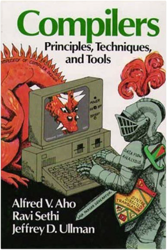
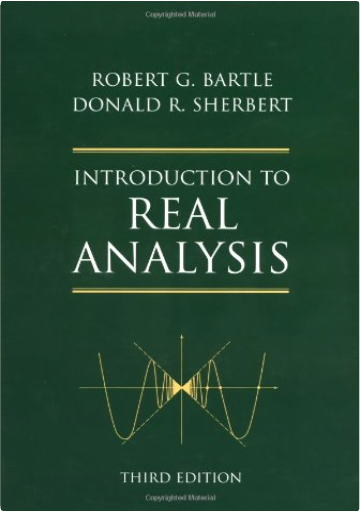
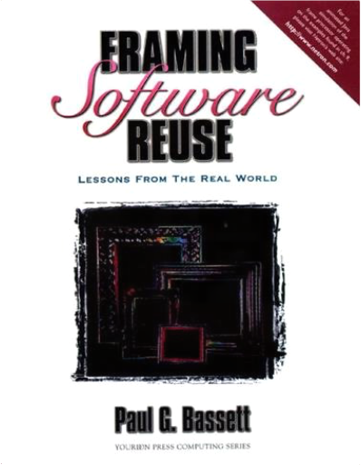
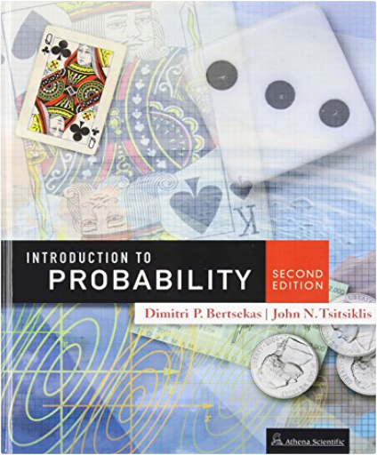
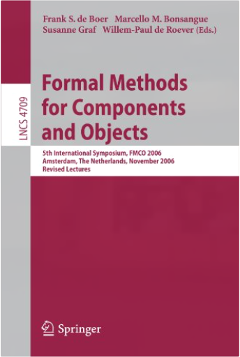
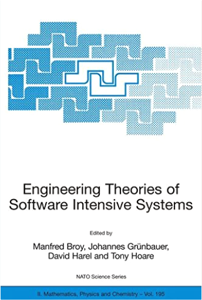
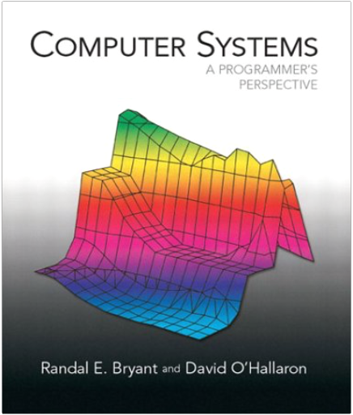
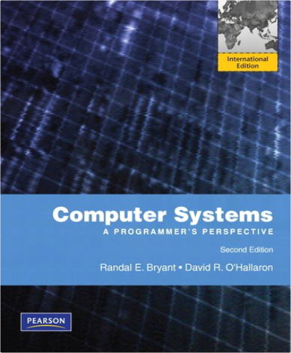
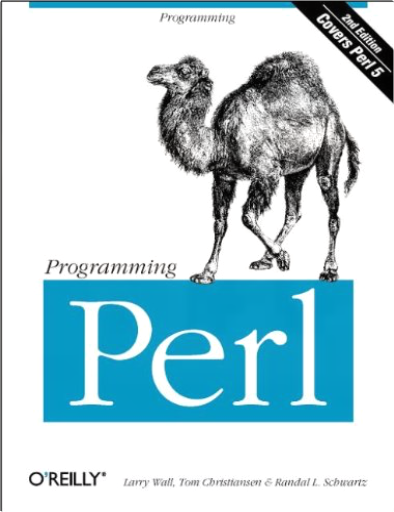

Blown to Bits: Your Life, Liberty, and Happiness After the Digital ExplosionHal Abelson, Ken Ledeen, Harry Lewis “If you want to understand the future before it happens, you’ll love this book. If you want to change the future before it happens to you, this book is required reading.”
–Reed Hundt, former Chairman of the Federal Communications Commission
“There is no simpler or clearer statement of the radical change that digital technologies will bring, nor any book that better prepares one for thinking about the next steps.”
–Lawrence Lessig, Stanford Law School and Author of Code and Other Laws of Cyberspace
“Blown to Bits will blow you away. In highly accessible and always fun prose, it explores all the nooks and crannies of the digital universe, exploring not only how this exploding space works but also what it means.”
–Debora Spar, President of Barnard College, Author of Ruling the Waves and The Baby Business
“This is a wonderful book–probably the best since Hal Varian and Carl Schultz wrote Digital Rules. The authors are engineers, not economists. The result is a long, friendly talk with the genie, out of the lamp, and willing to help you avoid making the traditional mistake with that all-important third wish.”
–David Warsh, Author of Knowledge and the Wealth of Nations
“Blown to Bits is one of the clearest expositions I’ve seen of the social and political issues arising from the Internet. Its remarkably clear explanations of how the Net actually works lets the hot air out of some seemingly endless debates. You’ve made explaining this stuff look easy. Congratulations!”
–David Weinberger, Coauthor of The Cluetrain Manifesto and Author of Everything Is Miscellaneous: The Power of the New Digital Disorder.
“Blown to Bits is a timely, important, and very readable take on how information is produced and consumed today, and more important, on the approaching sea change in the way that we as a society deal with the consequences.”
–Craig Silverstein, Director of Technology, Google, Inc.
“This book gives an overview of the kinds of issues confronting society as we become increasingly dependent on the Internet and the World Wide Web. Every informed citizen should read this book and then form their own opinion on these and related issues. And after reading this book you will rethink how (and even whether) you use the Web to form your opinions…”
–James S. Miller, Senior Director for Technology Policy and Strategy, Microsoft Corporation
“Most writing about the digital world comes from techies writing about technical matter for other techies or from pundits whose turn of phrase greatly exceeds their technical knowledge. In Blown to Bits, experts in computer science address authoritatively the practical issues in which we all have keen interest.”
–Howard Gardner, Hobbs Professor of Cognition and Education, Harvard Graduate School of Education, Author of Multiple Intelligences and Changing Minds
“Regardless of your experience with computers, Blown to Bits provides a uniquely entertaining and informative perspective from the computing industry’s greatest minds.
A fascinating, insightful and entertaining book that helps you understand computers and their impact on the world in a whole new way.
This is a rare book that explains the impact of the digital explosion in a way that everyone can understand and, at the same time, challenges experts to think in new ways.”
–Anne Margulies, Assistant Secretary for Information Technology and Chief Information Officer of the Commonwealth of Massachusetts
“Blown to Bits is fun and fundamental. What a pleasure to see real teachers offering such excellent framework for students in a digital age to explore and understand their digital environment, code and law, starting with the insight of Claude Shannon. I look forward to you teaching in an open online school.”
–Professor Charles Nesson, Harvard Law School, Founder, Berkman Center for Internet and Society
“To many of us, computers and the Internet are magic. We make stuff, send stuff, receive stuff, and buy stuff. It’s all pointing, clicking, copying, and pasting. But it’s all mysterious. This book explains in clear and comprehensive terms how all this gear on my desk works and why we should pay close attention to these revolutionary changes in our lives. It’s a brilliant and necessary work for consumers, citizens, and students of all ages.”
–Siva Vaidhyanathan, cultural historian and media scholar at the University of Virginia and author of Copyrights and Copywrongs: The Rise of Intellectual Property and How it Threatens Creativity
“The world has turned into the proverbial elephant and we the blind men. The old and the young among us risk being controlled by, rather than in control of, events and technologies. Blown to Bits is a remarkable and essential Rosetta Stone for beginning to figure out how all of the pieces of the new world we have just begun to enter–law, technology, culture, information–are going to fit together. Will life explode with new possibilities, or contract under pressure of new horrors? The precipice is both exhilarating and frightening. Hal Abelson, Ken Ledeen, and Harry Lewis, together, have ably managed to describe the elephant. Readers of this compact book describing the beginning stages of a vast human adventure will be one jump ahead, for they will have a framework on which to hang new pieces that will continue to appear with remarkable speed. To say that this is a ‘must read’ sounds trite, but, this time, it’s absolutely true.”
–Harvey Silverglate, criminal defense and civil liberties lawyer and writer
Every day, billions of photographs, news stories, songs, X-rays, TV shows, phone calls, and emails are being scattered around the world as sequences of zeroes and ones: bits. We can’t escape this explosion of digital information and few of us want to–the benefits are too seductive. The technology has enabled unprecedented innovation, collaboration, entertainment, and democratic participation.
But the same engineering marvels are shattering centuries-old assumptions about privacy, identity, free expression, and personal control as more and more details of our lives are captured as digital data.
Can you control who sees all that personal information about you? Can email be truly confidential, when nothing seems to be private? Shouldn’t the Internet be censored the way radio and TV are? Is it really a federal crime to download music? When you use Google or Yahoo! to search for something, how do they decide which sites to show you? Do you still have free speech in the digital world? Do you have a voice in shaping government or corporate policies about any of this?
Blown to Bits offers provocative answers to these questions and tells intriguing real-life stories. This book is a wake-up call to the human consequences of the digital explosion.
Preface xiii
Chapter 1: Digital Explosion: Why Is It Happening, and What Is at Stake? 1
Chapter 2: Naked in the Sunlight: Privacy Lost, Privacy Abandoned 19
Chapter 3: Ghosts in the Machine: Secrets and Surprises of Electronic Documents 73
Chapter 4: Needles in the Haystack: Google and Other Brokers in the Bits Bazaar 109
Chapter 5: Secret Bits: How Codes Became Unbreakable 161
Chapter 6: Balance Toppled: Who Owns the Bits? 195
Chapter 7: You Can’t Say That on the Internet: Guarding the Frontiers of Digital Expression 229
Chapter 8: Bits in the Air: Old Metaphors, New Technologies, and Free Speech 259
Conclusion: After the Explosion 295
Appendix: The Internet as System and Spirit 301
Endnotes 317
Index 347  Compilers: Principles, Techniques, and ToolsAlfred V. Aho, Ravi Sethi, Jeffrey D. Ullman This introduction to compilers is the direct descendant of the well-known book by Aho and Ullman, Principles of Compiler Design. The authors present updated coverage of compilers based on research and techniques that have been developed in the field over the past few years. The book provides a thorough introduction to compiler design and covers topics such as context-free grammars, fine state machines, and syntax-directed translation. 0201100886B04062001  Introduction to Real Analysis, 3rd EditionRobert G. Bartle, Donald R. Sherbert In recent years, mathematics has become valuable in many areas, including economics and management science as well as the physical sciences, engineering and computer science. Therefore, this book provides the fundamental concepts and techniques of real analysis for readers in all of these areas. It helps one develop the ability to think deductively, analyze mathematical situations and extend ideas to a new context. Like the first two editions, this edition maintains the same spirit and user-friendly approach with some streamlined arguments, a few new examples, rearranged topics, and a new chapter on the Generalized Riemann Integral.  Framing Software Reuse: Lessons From the Real WorldPaul G. Bassett Written by the inventor of the Bassett Frame Technology, this authoritative volume explains how cost-effectiveness of large I.S. departments can be improved 50-fold by implementing highly effective software engineering techniques. It identifies those techniques that work well together, and explains why they do. | Essentials of English Grammar: A Practical Guide to the Mastery of EnglishL. Sue Baugh In clear, concise terms, with lively examples, this convenient reference provides general usage rules for parts of speech, punctuation, capitalization, abbreviations, numbers, word division, spelling, and commonly confused words. This handy, easy-to-use guide provides essentials that are useful for people with the occasional question as well as those who are learning the basics. Style guidelines are included, with recommendations for achieving brevity, clarity and accuracy.  Introduction to Probability, 2nd EditionDimitri P. Bertsekas, John N. Tsitsiklis An intuitive, yet precise introduction to probability theory, stochastic processes, and probabilistic models used in science, engineering, economics, and related fields. The 2nd edition is a substantial revision of the 1st edition, involving a reorganization of old material and the addition of new material. The length of the book has increased by about 25 percent. The main new feature of the 2nd edition is thorough introduction to Bayesian and classical statistics.
The book is the currently used textbook for "Probabilistic Systems Analysis," an introductory probability course at the Massachusetts Institute of Technology, attended by a large number of undergraduate and graduate students. The book covers the fundamentals of probability theory (probabilistic models, discrete and continuous random variables, multiple random variables, and limit theorems), which are typically part of a first course on the subject, as well as the fundamental concepts and methods of statistical inference, both Bayesian and classical. It also contains, a number of more advanced topics, from which an instructor can choose to match the goals of a particular course. These topics include transforms, sums of random variables, a fairly detailed introduction to Bernoulli, Poisson, and Markov processes.
The book strikes a balance between simplicity in exposition and sophistication in analytical reasoning. Some of the more mathematically rigorous analysis has been just intuitively explained in the text, but is developed in detail (at the level of advanced calculus) in the numerous solved theoretical problems.
Written by two professors of the Department of Electrical Engineering and Computer Science at the Massachusetts Institute of Technology, and members of the prestigious US National Academy of Engineering, the book has been widely adopted for classroom use in introductory probability courses within the USA and abroad.
From a Review of the 1st Edition:
...it trains the intuition to acquire probabilistic feeling. This book explains every single concept it enunciates. This is its main strength, deep explanation, and not just examples that happen to explain. Bertsekas and Tsitsiklis leave nothing to chance. The probability to misinterpret a concept or not understand it is just... zero. Numerous examples, figures, and end-of-chapter problems strengthen the understanding. Also of invaluable help is the book's web site, where solutions to the problems can be found-as well as much more information pertaining to probability, and also more problem sets. —Vladimir Botchev, Analog Dialogue
Several other reviews can be found in the listing of the first edition of this book. Contents, preface, and more info at publisher's website (Athena Scientific, athenasc com)  Formal Methods for Components and Objects: 5th International Symposium, FMCO 2006, Amsterdam, Netherlands, November 7-10,2006, Revised LecturesFrank S. de Boer, Marcello M. Bonsangue, Susanne Graf, Willem-Paul de Roever This book presents 12 revised lectures given by top-researchers at the 5th International Symposium on Formal Methods for Components and Objects, FMCO 2006, held in Amsterdam, Netherlands in November 2006. It provides a unique combination of ideas on software engineering and formal methods that reflect the current interest in the application or development of formal methods for large scale software systems such as component-based systems and object systems.  Engineering Theories of Software Intensive Systems: Proceedings of the NATO Advanced Study Institute on Engineering Theories of Software Intensive ... 3 to 15 August 2004Manfred Broy, Johannes Gruenbauer, David Harel, Tony Hoare Software engineering has over the years been applied in many different fields, ranging from telecommunications to embedded systems in car and aircraft industry as well as in production engineering and computer networks. Foundations in software technology lie in models allowing to capture application domains, detailed requirements, but also to understand the structure and working of software systems like software architectures and programs. These models have to be expressed in techniques based on discrete mathematics, algebra and logics. However, according to the very specific needs in applications of software technology, formal methods have to serve the needs and the quality of advanced software engineering methods, especially taking into account security aspects in Information Technology. This book presents mathematical foundations of software engineering and state-of-the-art engineering methods in their theoretical substance in the step towards practical applications to examine software engineering techniques and foundations used for industrial tasks.
The contributions in this volume emerged from lectures of the 25th International Summer School on Engineering Theories of Software Intensive Systems, held at Marktoberdorf, Germany from August 3 to August 15, 2004.  Computer Systems: A Programmer's PerspectiveRandal E. Bryant, David R. O'Hallaron This book explains the important and enduring concepts underlying all computer systems, and shows the concrete ways that these ideas affect the correctness, performance, and utility of application programs. The book's concrete and hands-on approach will help readers understand what is going on ?under the hood? of a computer system. This book focuses on the key concepts of basic network programming, program structure and execution, running programs on a system, and interaction and communication between programs. For anyone interested in computer organization and architecture as well as computer systems.  Computer Systems: A Programmer's Perspective: International EditionRandal E. Bryant, David R. O'Hallaron For Computer Systems, Computer Organization and Architecture courses in CS, EE, and ECE departments.Few students studying computer science or computer engineering will ever have the opportunity to build a computer system. On the other hand, most students will be required to use and program computers on a near daily basis. Computer Systems: A Programmer's Perspective introduces the important and enduring concepts that underlie computer systems by showing how these ideas affect the correctness, performance, and utility of application programs. The text's hands-on approach (including a comprehensive set of labs) helps students understand the "under-the-hood" operation of a modern computer system and prepares them for future courses in systems topics such as compilers, computer architecture, operating systems, and networking.Visit the CSS:AP web page http://csapp.cs.cmu.edu for more information and resources.  Programming PerlTom Christiansen, Randal L. Schwartz, Larry Wall Programming Perl, 2nd Edition is the authoritative guide to Perl version 5, the scripting utility that has established itself as the programming tool of choice for the World Wide Web, UNIX system administration, and a vast range of other applications. Version 5 of Perl includes object-oriented programming facilities. The book is coauthored by Larry Wall, the creator of Perl.Perl is a language for easily manipulating text, files, and processes. It provides a more concise and readable way to do many jobs that were formerly accomplished (with difficulty) by programming with C or one of the shells. Perl is likely to be available wherever you choose to work. And if it isn't, you can get it and install it easily and free of charge.This heavily revised second edition of Programming Perl contains a full explanation of the features in Perl version 5.003. Contents include: An introduction to PerlExplanations of the language and its syntaxPerl functionsPerl library modulesThe use of references in PerlHow to use Perl's object-oriented featuresInvocation options for Perl itself, and also for the utilities that come with PerlOther oddments: debugging, common mistakes, efficiency, programming style, distribution and installation of Perl, Perl poetry, and so on. |

 Made with Delicious Library
Made with Delicious Library